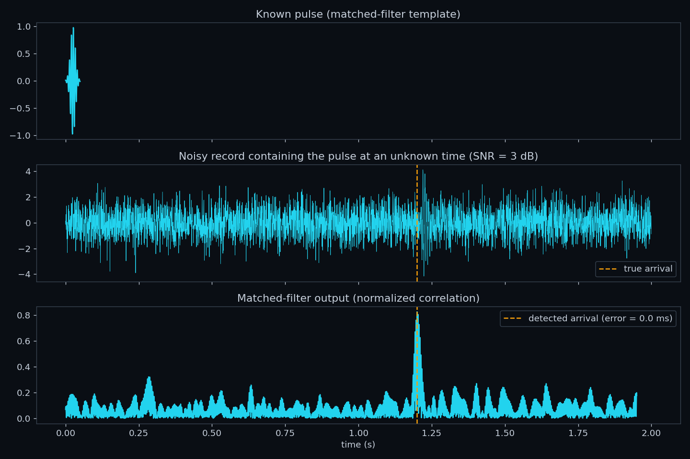
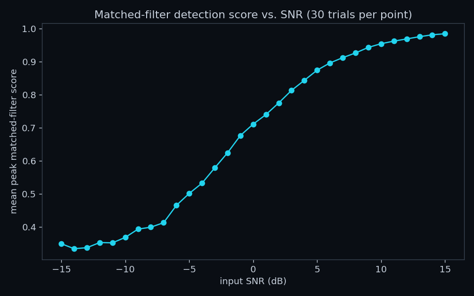
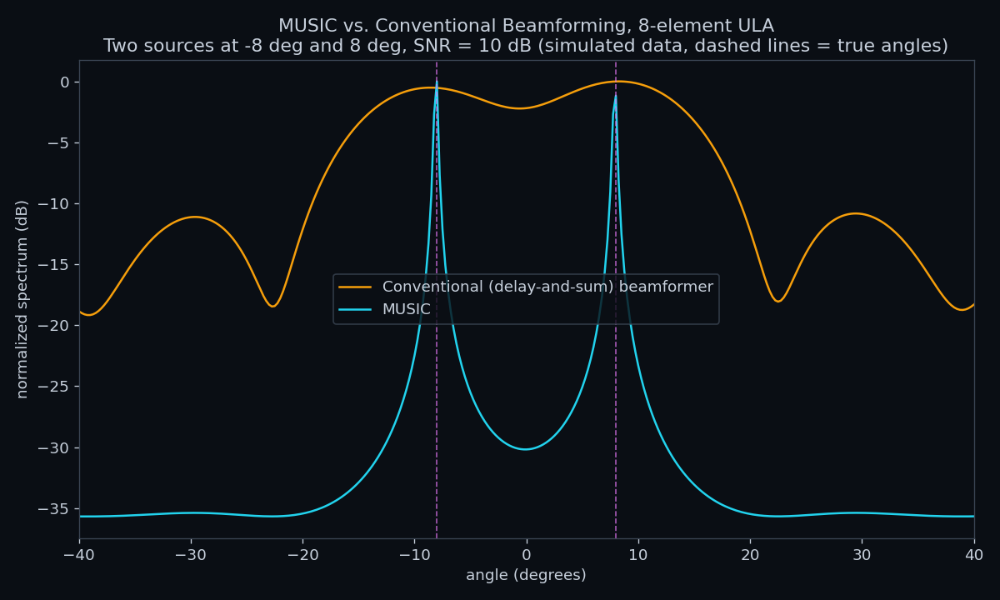

The two earlier reports in this portfolio, a tank characterization of a piezoelectric underwater transducer and hydrophone system, and a channel and modulation study of a real multi-band OFDM/QPSK lake trial, both presented original measurements and original computational analysis of real data. This report is different in kind. It draws on coursework, taken during a master's program in underwater acoustic engineering, covering DSP processor architecture, underwater acoustic channel properties, statistical detection theory, array signal processing, and OFDM communication. That coursework included published research papers, a graduate-level array processing textbook, and university lecture slides, none of which are original work and none of which are reproduced in this report or included in its repository.
What this report does instead is connect the two: it summarizes, in its own words and at a level appropriate for proper citation, the core idea from each area of coursework, and then shows, concretely, where that idea reappeared in the two earlier reports' real results. Two small computational demonstrations, a matched-filter detector and a MUSIC direction-of-arrival estimator, are built from scratch to demonstrate working understanding of the two most algorithmically involved topics. Both are clearly labeled as original illustrative code, not reproductions of any cited source.
Underwater acoustic processing, matched filtering, beamforming, OFDM demodulation, is computationally intensive and, in a deployed system, must run in real time on embedded hardware. Coursework on the Texas Instruments TMS320C54x and TMS320C55x fixed-point DSP families [8] compared their architectures directly: the C54x uses a single multiply-accumulate (MAC) unit and a 16-bit fixed instruction width, while the C55x adds a second MAC unit, four accumulators instead of two, and a variable-length instruction set (8 to 48 bits) that improves code density. The practical consequence is throughput: the C55x reaches roughly 140 to 800 million instructions per second against 30 to 160 for the C54x, at roughly one-sixth the power per instruction.
Every algorithm discussed in this report, matched filtering (Section 4), MUSIC (Section 5), and OFDM demodulation (Section 6), reduces at its core to the same operation this comparison is about: multiply-and- accumulate, applied either as a correlation, a covariance estimate, or an FFT butterfly. The processor architecture used in a real deployed system determines whether these operations run fast enough, and at low enough power, for an autonomous underwater platform. This is why DSP architecture is coursework foundational to the rest of this report rather than a separate topic.
Coursework on underwater acoustic communication channels covered the properties that make shallow-water acoustic links difficult: surface-wave-driven channel variation, medium inhomogeneities, and the resulting amplitude and phase fluctuation within and between transmitted packets, along with the associated challenge of channel estimation under these conditions. Two properties from that literature are directly testable against this portfolio's own measured data.
Frequency-dependent attenuation. Underwater acoustic absorption increases with frequency, so a wideband channel should show falling signal-to-noise ratio (SNR) at higher frequencies over a fixed range. The lake trial report measured this directly, not modeled it: real signal-to-noise ratio measured from the field recording fell from 7.9 dB at 3-6 kHz to 3.3 dB at 12-15 kHz, monotonically across all four measured bands.
Short channel coherence time. The literature on intra-packet channel variation describes shallow-water channels whose impulse response can change meaningfully within a single transmitted packet. The lake trial report measured this too: a channel estimate computed from one real received OFDM symbol was smooth and physically consistent with genuine multipath propagation, but did not remain valid for the very next symbol, 170.7 ms later, evidence that this channel's coherence time is shorter than the trial's own symbol spacing.
Both measurements are real, independent results from that report, not new analysis performed here; they are presented in this section because they are the empirical counterpart to the theoretical channel properties studied in coursework, and seeing both together is the point of this report.
Two research papers studied during a detection-theory course addressed the same underlying problem from different angles. One proposed detecting and estimating the time-of-arrival of underwater acoustic signals of unknown structure by labeling samples as signal or noise using a constrained expectation-maximization (EM) algorithm combined with the Viterbi algorithm for hidden Markov model clustering, avoiding the need for a fixed detection threshold; it was validated against a real sea experiment. The other, by Taylor, Arrowsmith, and Anderson [4], developed a matched-filter detector combined with a p-value formulation for detecting small explosions at local distances, built on the classical Neyman-Pearson hypothesis-testing framework.
The common foundation beneath both papers is the matched filter: correlating a received signal against a known reference waveform is the provably optimal linear detector for a known signal in white Gaussian noise [7]. Figure 1 demonstrates this from scratch, an original implementation, not derived from either cited paper, on a synthetic scenario: a short pulse is buried in a noise record at 3 dB SNR, invisible to the eye, yet the matched-filter output produces a sharp, unambiguous peak at the true arrival time. Figure 2 sweeps the input SNR and shows the detection score degrading gracefully rather than catastrophically as SNR falls, the qualitative behavior both cited papers report from their own more sophisticated detectors.


This is not only a theoretical exercise. The identical technique, correlating a short known reference waveform against a much longer real recording, was used for real in the lake trial report to identify a synchronization pulse experiment: a matched filter built from one extracted pulse achieved 1,233 detections across a 1006-second recording, many with correlation scores above 0.99. The coursework studied the theory; the lake trial applied it to real data and it worked exactly as the theory predicts.
Array signal processing coursework, built around Van Trees' graduate textbook Optimum Array Processing [1] and semester-long lecture slides on the same subject, covered the theory of sensor arrays: how a set of spatially distributed sensors can be combined to estimate the direction of arrival of an incoming signal, from classical delay-and-sum beamforming through modern subspace-based methods. Neither the textbook nor the course slides are reproduced here.
Figure 3 is an original, from-scratch implementation of the MUSIC (MUltiple SIgnal Classification) algorithm [6], the subspace-based direction-of-arrival method that is the modern successor to the classical beamforming theory in [1]. The scenario is a simulated 8-element uniform linear array receiving two plane waves from angles 8 degrees apart, at 10 dB SNR. This is a simulation: no multi-element hydrophone array recording exists anywhere in this project's portfolio, so the point is to demonstrate the algorithm's correctness, not to characterize a real array.

The result reproduces the textbook's central claim about subspace methods: MUSIC's pseudospectrum shows two sharp, well-separated peaks exactly at the true angles, with more than 30 dB of null depth between them, while the conventional beamformer at the same array aperture shows only a shallow, barely-resolved dip. This is the resolution advantage that motivates using subspace methods in sonar and hydrophone array systems where physical aperture is constrained.
OFDM (orthogonal frequency-division multiplexing) was the subject of a coursework presentation: splitting a wideband channel into narrowband orthogonal subcarriers, modulating each independently, and recovering them at the receiver via the fast Fourier transform, the same technique that underlies essentially all modern wireless and underwater acoustic digital communication standards.
This is the one topic in this report where coursework and applied result are not just conceptually linked but numerically identical. The lake trial report determined, from first principles and with no surviving transmission documentation, the exact OFDM parameters of a real 2018 underwater communication trial: a real-valued 8192-point FFT operating directly at 48 kHz, with 512 active QPSK subcarriers per 3 kHz sub-band. That model reproduced the known pilot data of every transmitted reference burst to within 0.001% error vector magnitude, and was then used to measure the real channel properties summarized in Section 3.
The presentation covered why OFDM is attractive (spectral efficiency, robustness to narrowband interference and multipath, straightforward equalization) at a conceptual level appropriate for an introductory treatment. The lake trial report is the concrete demonstration of exactly those properties, and of the practical difficulty Section 3 already described: a channel whose coherence time is shorter than the OFDM symbol period it was built to serve.
Figure 4 summarizes the structure of this report: each coursework area studied maps to a specific result already produced elsewhere in this portfolio, or to an original demonstration built here to show the underlying method is genuinely understood rather than only cited.
The lesson that generalizes across all five rows is the same one detection theory itself teaches: a technique's value is established not by how sophisticated it sounds, but by whether it performs against real data. Matched filtering is a simple, decades-old idea; it detected a real synchronization pulse at correlation scores above 0.99. An 8192-point FFT with 512 active subcarriers is a specific, checkable claim; it reproduced real pilot data to 0.001% error. MUSIC's resolution advantage over conventional beamforming is a textbook claim; the simulation in Figure 3 reproduces it directly. In each case, the coursework provided the concept, and this portfolio's other reports, or the original demonstrations built here, provided the verification.